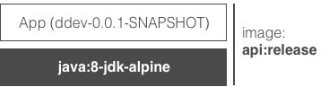
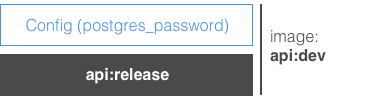
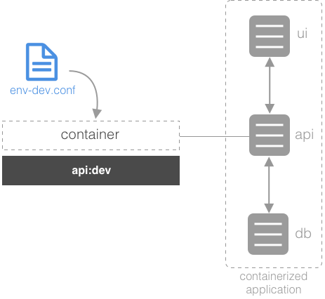

Configuration Management
In this exercise we are going to extend the Java API of the workshop sample such as that it uses a bunch of environment variables, and allow for different secrets configuration in development versus production environments.
The project folder for this exercise is ~/ddev-labs/configuration-management.
Planning Environment-Specific API Config
Creating a Release Image
In this part of this exercise, we'll start by creating a release image like shown in following figure:
/
Have a look in
api/Dockerfile; the final image is based off ofjava:8-jdk-alpine. This java base image corresponds to the application base image, likely provided to us by our operations team. We expect any company-wide general config to have already been captured there.Build the API image as is:
ubuntu@infra:~$ cd ~/ddev-labs/configuration-management/api ubuntu@infra:~/ddev-labs/configuration-management/api$ docker image build \ -t api:release .This corresponds to our release image - it has our application on top of our enterprise base image, but no environment-specific config has been included yet.
Creating an Environment Image for Development
Including Config in the Environment Image
In this part of the exercise, we will start by including a postgres password into an environment image like shown in the following figure:
/
Have a look in
api/src/main/java/com/docker/ddev/configuration/JpaConfiguration.java. There should be a block that begins:// Set password to connect to postgres using Docker secrets. try(BufferedReader br = new BufferedReader(new FileReader("/run/secrets/postgres_password"))) { ...Our API relies on a secret to be able to access our Postgres database. As discussed in the secrets section, it may be convenient to mock the presence of this secret in development, in case we aren't running Swarm mode on our dev machines.
Make a development environment image for your API that mocks the presence of a secret in its nominal location by copying the file with your postgres password into the
apifolder:ubuntu@infra:~/ddev-labs/configuration-management/api$ cp \ ../devsecrets/postgres_password .And create a Dockerfile called
Dockerfile-devthat places this file where it would if it was a Swarm-managed secret, in an image based on your release image:FROM api:release ADD postgres_password /run/secrets/postgres_passwordAnother option in this situation would be to use the same image for development and production, but mount a secret file into
/run/secrets/postgres_passwordat runtime to mock the secret in the dev image. This has the advantage of only creating one image for both environments, but the disadvantage that that config (mounting the volume) has to be repeated each time the application is run in the dev environment. The approach followed in this step pushes that config as far 'upstream' as possible, to avoid repetition later, at the cost of image flexibility.Build this development environment image:
ubuntu@infra:~/ddev-labs/configuration-management/api$ docker image build \ -f Dockerfile-dev \ -t api:dev .
Passing Config On Startup
In the following, we will pass further needed configuration in a file as shown in this figure:
/
Open the class
TestController.javain the folderapi/src/main/java/com/docker/ddev/controller. In this class we have ashowConfigmethod that listens on the endpoint/utility/showConfigand returns the content of some environment variables:... public ResponseEntity<?> showConfig() { logger.info("Performing showConfig"); JSONObject config = new JSONObject(); config.put("APP_ENVIRONMENT", System.getenv("APP_ENVIRONMENT")); config.put("IMAGES_DIRECTORY", System.getenv("IMAGES_DIRECTORY")); config.put("PDF_DIRECTORY", System.getenv("PDF_DIRECTORY")); config.put("MIN_STOCK_COUNT", System.getenv("MIN_STOCK_COUNT")); return new ResponseEntity<JSONObject>(config, HttpStatus.OK); } ...We'd like to control these variables dynamically at startup.
To the file
configuration-management/env-dev.confadd the following definitions:APP_ENVIRONMENT=DEV IMAGES_DIRECTORY=/some/folder/for/dev/images PDF_DIRECTORY=/some/folder/for/dev/pdf MIN_STOCK_COUNT=2Copy the file
configuration-management/docker-compose.ymlto a new filedocker-compose-dev.yml.Open the file
docker-compose-dev.ymland add the following to theapiservice:under
build, adockerfileline pointing atDockerfile-dev.and an
env_filesection with the fileenv-dev.conf.
After the changes, the
apiservice should look as follows:... api: build: context: api dockerfile: Dockerfile-dev image: ddev_api ports: - "8080:8080" - "5005:5005" networks: - front-tier - back-tier env_file: - env-dev.conf ...Run the application with the configuration file:
ubuntu@infra:~/ddev-labs/configuration-management$ docker-compose \ -f docker-compose-dev.yml up -d --buildTest the configuration:
ubuntu@infra:~$ curl localhost:8080/api/show-config | jqand you should see something like this:
{ "PDF_DIRECTORY":"/some/folder/for/dev/images", "IMAGES_DIRECTORY":"/some/folder/for/dev/pdf", "APP_ENVIRONMENT":"DEV", "MIN_STOCK_COUNT":"2" }At this point, we have defined a hierarchy of images, from application base image, to release image, to development environment image that capture increasing levels of specificity at each tier. Also, we have successfully captured the environment variables for our developer environment in a configuration file referenced by a compose file dynamically at startup.
Tear down the app:
ubuntu@infra:~/ddev-labs/configuration-management$ docker-compose \ -f docker-compose-dev.yml down
Preparing Deployment to Production
Next, let's take advantage of the hierarchy we've set up to quickly and easily prepare to deploy to a production environment.
In production, we want to use a real secret, not the mock in our
api:devimage. In this case, there's no special config we need to insert into the image, since Docker's secrets functionality will do this for us. Simply retag our release image:ubuntu@infra:~$ docker image tag api:release api:prodWe'll see later how Docker Enterprise Edition can do such 'image promotion' for us as part of an automated CI/CD chain, in order to automatically perform such a retagging.
Start up swarm mode if you haven't already, to use as our 'production environment', and then create a secret for use by our production app:
ubuntu@infra:~$ docker swarm init ubuntu@infra:~$ echo "gordonpass" | docker secret create postgres_password -Define a new environment variable file
env-prod.confin the folderconfiguration-management:APP_ENVIRONMENT=PROD IMAGES_DIRECTORY=/some/folder/for/production/images PDF_DIRECTORY=/some/folder/for/production/pdf MIN_STOCK_COUNT=5Create a file
docker-compose-prod.ymlbased on the existingdocker-compose.ymlthat uses your newapi:prodimage, provisioning it with the secret and production environment-specific config file you just created.Here is how
docker-compose-prod.ymlcould look like:version: "3.1" services: database: build: context: database image: ddev_db environment: POSTGRES_USER: gordonuser POSTGRES_DB: ddev ports: - "5432:5432" networks: - back-tier api: image: api:prod ports: - "8080:8080" - "5005:5005" networks: - front-tier - back-tier secrets: - postgres_password env_file: - env-prod.conf ui: build: context: ui image: ddev_ui ports: - "3000:3000" networks: - front-tier networks: front-tier: back-tier: secrets: postgres_password: external: trueRun the production version:
ubuntu@infra:~/ddev-labs/configuration-management$ docker stack deploy \ -c docker-compose-prod.yml prodTest the production version of your application to make sure it works as expected:
ubuntu@infra:~$ curl localhost:8080/api/show-config | jqClean up:
ubuntu@infra:~/ddev-labs/configuration-management$ docker stack rm prod ; \ docker swarm leave -f
Configuration Management in Kubernetes
We have already seen how secrets are handled in Kubernetes. Let's now see how we can use ConfigMap objects to configure our application.
In
kube.yaml, notice the definition of aConfigMapobject:apiVersion: v1 kind: ConfigMap metadata: name: dev-config namespace: ddev data: APP_ENVIRONMENT: DEV APP_IMAGES_DIRECTORY: "/some/folder/for/dev/images" APP_PDF_DIRECTORY: "/some/folder/for/dev/pdf" APP_MIN_STOCK_COUNT: "2"We import this into a pod by name in the same file:
envFrom: - configMapRef: name: dev-configCreate the objects in Minikube:
ubuntu@infra:~/ddev-labs/configuration-management$ kubectl apply -f kube.yamlNote that the container will run in the pod executing this command:
/bin/sh -c "env"which will output the list of all environment variables as seen by the container.Now get the (sorted) log from the the container we just ran:
ubuntu@infra:~/ddev-labs/configuration-management$ kubectl -n ddev \ logs po/config-test-pod | sortit should look similar to this:
APP_ENVIRONMENT=DEV APP_IMAGES_DIRECTORY=/some/folder/for/dev/images APP_MIN_STOCK_COUNT=2 APP_PDF_DIRECTORY=/some/folder/for/dev/pdf HOME=/root HOSTNAME=config-test-pod KUBERNETES_PORT=tcp://10.96.0.1:443 KUBERNETES_PORT_443_TCP=tcp://10.96.0.1:443 ...as you can see, the
envFromkey in ourkube.yamlpoints to batches of environment variables to be defined in a running container, as defined byConfigMapobjects.Clean up:
ubuntu@infra:~/ddev-labs/configuration-management$ kubectl delete ns/ddev
Optional Challenge: Packaging and Shipping
Now that we've created two versions of our application for two different environments, let's package it up so we can deploy it easily on a remote datacenter.
Create a git repo with two branches
devandprod, put the appropriate versions of your app in each, and push to GitHub.Tag all the images your datacenter will need to pull appropriately, and push them to Docker Hub.
Log into your first AWS node (
ucp-manager), and pull your project from GitHub.Stand up your application configured for the dev environment.
Shut down your dev deployment, and stand up your application for the prod environment.
Conclusion
In this exercise, we defined a simple hierarchy of images and config files that capture configuration at a few different steps. As a rule of thumb, configuration should live at the most general level of this hierarchy that makes sense. For example, it wouldn't make sense to mock your secret in your upstream release image, since the production image will mount a real secret instead. However, it's not necessary to put off mocking that secret to startup or runtime for your developer environment, so the correct place to mock that secret was in the developer environment image.
By the same token, we left environment variables out of our images and defined them at startup in env.conf files in Swarm or via ConfigMap objects in Kubernetes, to maintain flexibility in their definition as long as possible. We could go a step further and push config definition all the way to runtime, by providing our containers with whatever information they need to query outside services (Hashicorp vaults, Consul KV stores...) dynamically while running.